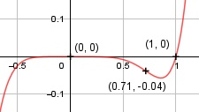

Aufgabe 67 f(x) = x7 - x6 f'(x) = 7x6 - 6x5, f''(x) = 42x5 - 30x4, f'''(x) = 210x4 - 120x3 Definitionsbereich: -∞ < x < ∞ Wertebereich: -∞ < f(x) < ∞ Asymptoten: - Symmetrie zur y-Achse bzw. zum Punkt (0|0): f(-x) = (-x)7 – (-x)6 f(-x) = -x7 – x6 ≠ f(x) --> keine Achsensymmetrie -f(-x) = -(-x7 – x6) -f(-x) = x7 + x6 ≠ f(x) --> keine Punktsymmetrie Nullstellen: f(x) = 0 x7- x6 = 0 x6 * (x - 1) = 0 x6 = 0 | x1 = 0 x - 1 = 0 |+1 x2 = 1 N1(0|0), N2(1|0) Schnittpunkt mit der y-Achse: x = 0 f(0) = 07- 06 = 0 Sy(0|0) Extrempunkte: f'(x) = 0 7x6 - 6x5 = 0 x5 * (7x - 6) = 0 x5 = 0| x1 = 0, f(0) = 0 7x - 6 = 0 |+6 7x = 6 |:7 x2 = 0,86 f(0,86) = 0,867- 0,866 = -0,06 f''(0) = 42 * 05 - 30 * 04 = 0 f''(0,86) = 42 * 0,865 - 30 * 0,864 > 0 --> Tiefpunkt (0,86|-0,06) Wendepunkte: f''(x) = 0 42x5 - 30x4 = 0 x4 * (42x - 30) = 0 x4 = 0 | x1 = 0 42x - 30 = 0 |+30 42x = 30 |:42 x2 = 0,71 f(0,71) = 0,717- 0,716 = -0,04 f'''(0) = 210 * 04 - 120 * 03 = 0 f''''(0) = 840 * 03 - 360 * 02 = 0 f'''''(0) = 2520 * 02 - 720 * 0 = 0 f''''''(0) = 5040 * 0 - 720 < 0 --> Grad der Ableitung gerade --> Hochpunkt (0|0) f'''(0,71) = 210 * 0,714 - 120 * 0,713 ≠ 0 --> Wendepunkt (0,71|-0,04) Graph:
